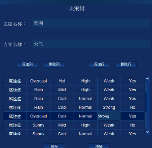
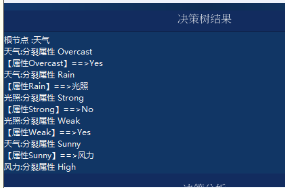
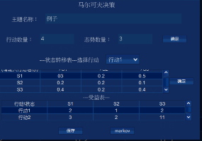
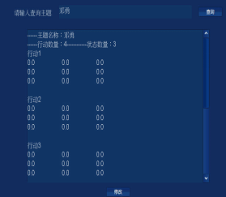

战略决策操作说明
一．决策树决策
1.点击主界面工具栏的战略决策按钮，进入下面我们的战略决策界面。

在这个界面中：首先点击工具栏中的新建按钮，下面会出现选择决策树决策和markov决策，我们选择决策树决策。在主题名称文本框中输入主题名称，在方案名称文本框中输入方案名称，下面添加列，删除列，添加行，输出行按钮分别控制下面表格的行数和列数。下面决策表中，在第一行填写属性名，如图中Q 、W、F、QQ是填写的属性名。在下面的表格里面填写其属性对应的属性值，如A F Q 1 A D G 2 S D J 1。填写完之后就可以点击保存，然后点击决策，填入的数据会保存到相应的数据库中，显示决策出结果
2.决策结果如下图：

决策结果出来显示在这个界面的决策树结果文本框中，如图所示。在决策结果下面有一个决策分析表格，在决策分析表格中属性值那一行中可以填写你所需要查询的决策路径。如图中A D,代表所查路径中属性Q的值为A，属性W的值为D时，所需要查询的的决策结果。输入好查询路径后，点击确定按钮，所属路径的决策结果则显示在最下面的文本框中。此时决策树决策完成
二．markov决策
1同上面一样，点击主界面工具栏的战略决策按钮，进入下面我们的战略决策界面。

在这个界面中：首先点击工具栏新建按钮，下面会出现选择决策树决策和markov决策，我们选择markov决策。在这个界面中，我们在主题名称文本框中输入主题名称，然后填写行动数量，态势数量。填写到这里点击第二排的确定按钮，确定我们所选的主题名称，行动数量以及态势数量。（如图中我们选择了3个行动数，4个态势数量，那么在下面的状态转移表对应着行动1到行动4的4个状态转移。）在状态转移表上有选择行动的下拉框，选择行动1，将其下面对应的状态转移表填写完整，然后点击表格右边的确定按钮，然后选择行动2，填写对应的状态转移表完整，然后点击确定。一直把每个行动对应的状态转移表都填写完整。然后填写下面的受益表，将受益表填写完整之后就可以点击保存按钮，然后点击markov按钮。此时决策结果就会显示在界面最下面的文本框中。此时markov决策结束。
三、查询
同上面一样，点击主界面工具栏的战略决策按钮，进入下面我们的战略决策界面。此时点击工具栏中的操作按钮，面会出现选择决策树查询和markov查询。如下图 。

当我们选择决策树查询时，我们在查询主题文本框中输入决策树决策中以我们需要查询的决策主题名称，然后点击查询按钮，这个主题对应的信息以及决策结果将显示在图中的文本框中；
当我们选择markov查询时，我们在查询主题文本框中输入markov决策中我们需要查询的决策主题名称，然后点击查询按钮，这个主题对应的信息以及决策结果将显示在图中的文本框中。查询结束。